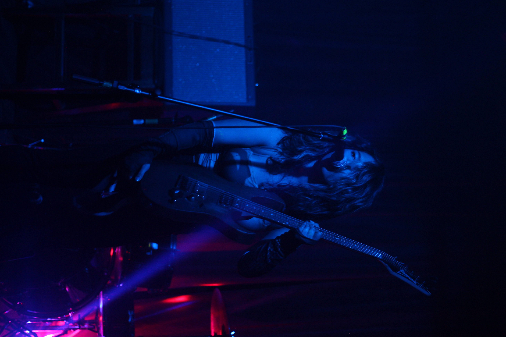
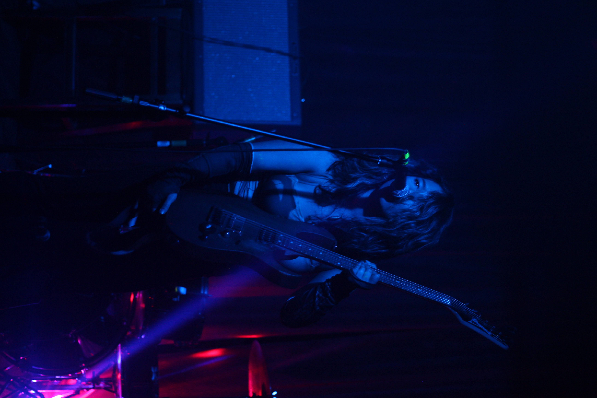

Hey, I'm Billie... Based in Toronto, Canada. I'm a second-year graphic design student at Humber College known for her edgy style. Before enrolling in a design program, I was originally self-taught since 2019 after finding myself designing song covers, band logos and other grungey visuals on Affinity Photo. I realized that it was a job I could see myself enjoying and would take it any day over my stressful barista shifts. School allowed me to transform my raw talent for design into something more refined and conceptual. I am also an alumni of Seneca's Music Production program and have excellent music production abilities. Whether you need me to design your logo, or produce a hit---you can count on me. When I’m not designing, I’m either producing the next big rock hit, performing on stage or playing video games.
 
